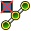
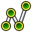

Cables RemoveVertexAttachment/fr
|
 |
| Emplacement du menu |
|---|
| Cable Wires → Remove Vertex Attachment |
| Ateliers |
| Cables |
| Raccourci par défaut |
| W R |
| Introduit dans la version |
| 0.1.0 |
| Voir aussi |
| Cables Attacher un sommet |
Description
Supprimer la connexion d'un sommet supprime une connexion de sommet existante d'un 
{kind=link}
{kind=link}
Elle peut être utilisé de manière interchangeable avec la commande « Remove point attachment » de Cables Éditer, voir WireFlex Description.
Une fois la connexion supprimée, le sommet de la polyligne peut être déplacé librement dans l'espace 3D à l'aide de Cables Éditer.
Utilisation
- Sélectionnez un sommet d'un objet WireFlex existant dans la vue 3D.
- Supprimer la connexion du sommet sélectionné par l'une des méthodes suivantes :
- Appuyez sur le bouton Remove Vertex Attachment.
- Sélectionnez l'option Cable Wires → Remove Vertex Attachment du menu.
- Cliquez avec le bouton droit de la souris dans l'arborescence ou la vue 3D et sélectionnez l'option Cable Wires → Remove Vertex attachment dans le menu contextuel.
Remarques
- A partir de la version 0.2.0, cette commande peut également être exécutée en utilisant le menu contextuel du nœud dans la commande Cables Éditer.
- Voir la description du WireFlex et l'utilisation du WireFlex pour plus de détails sur l'utilisation de WireFlex.